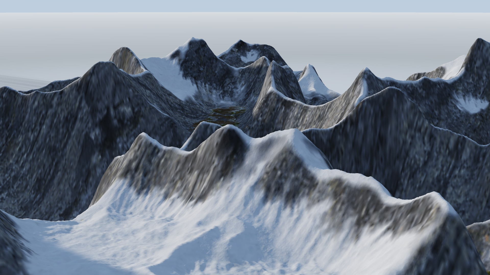
TerraForge is a native node-based studio for 3D terrain and environments. Simulated water carves the valleys, and the same simulation decides where the rock, scree, soil, grass and snow belong — each one a photoscanned surface, placed by the physics rather than by hand.
Every image on this page is a screenshot of the application's own real-time viewport. Nothing is composited, retouched or rendered elsewhere. The five terrains differ only in their noise, their materials and their light; the erosion underneath is identical.
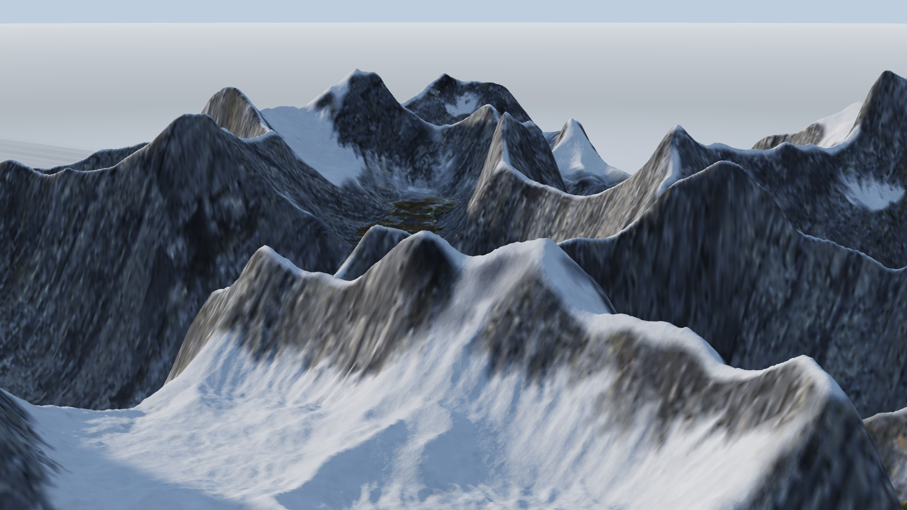
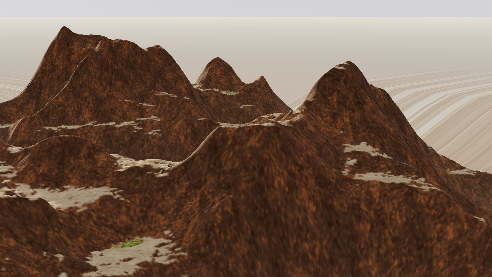
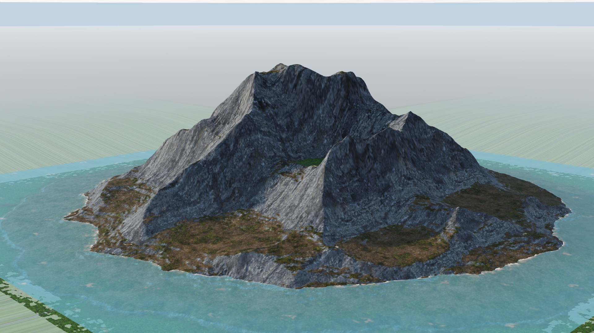
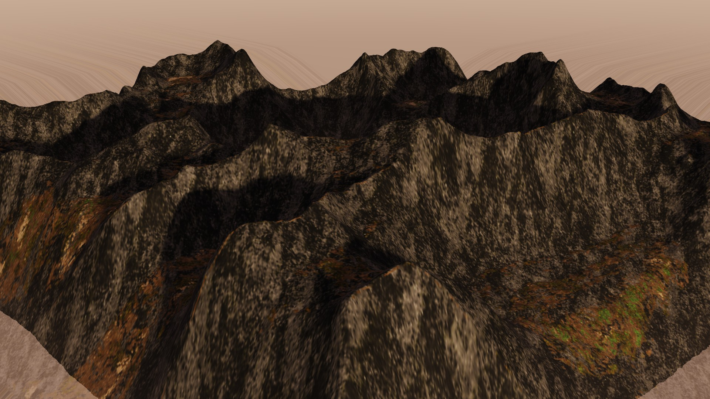
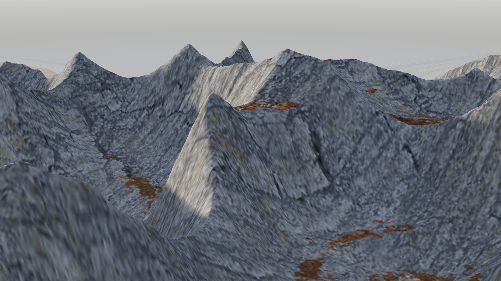
Eight workspaces over one shared graph — Terrain, Materials, Objects, Atmosphere, Lighting, Cameras, Animation and Render. Every panel docks, floats and tears out to another monitor.
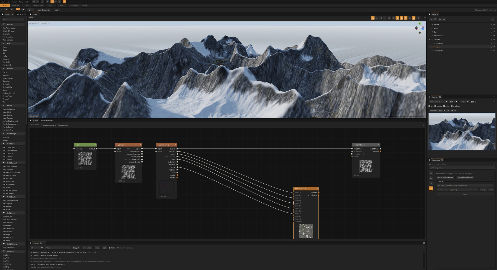
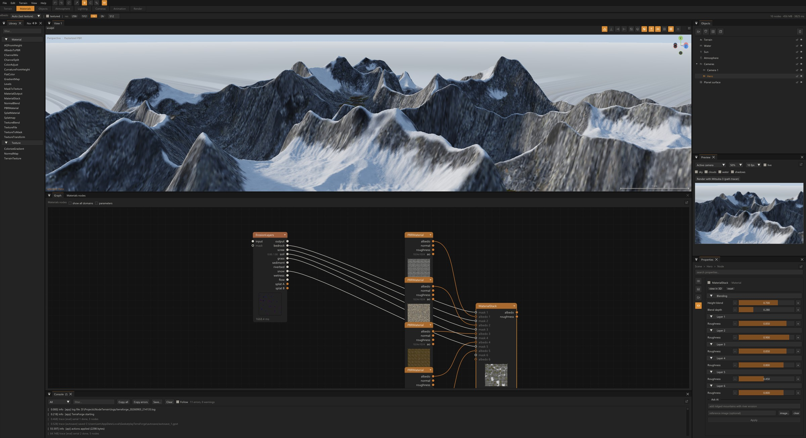
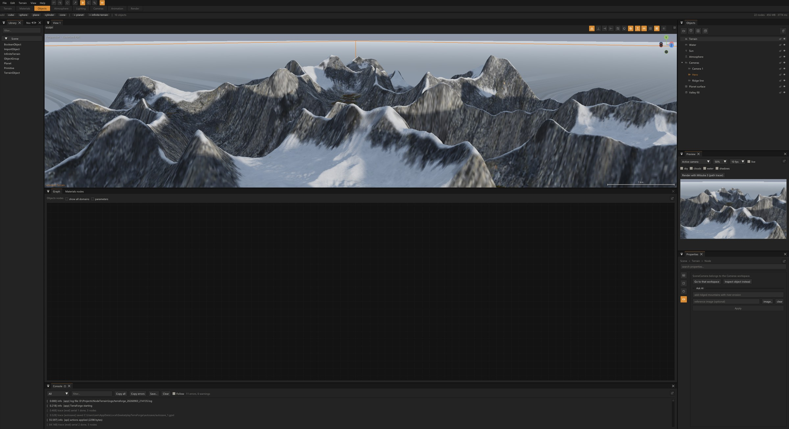
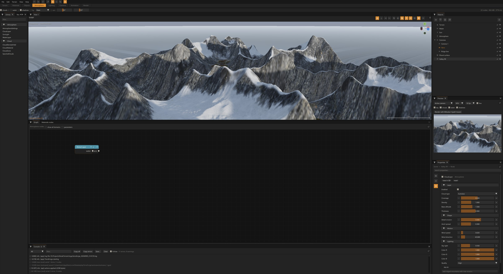
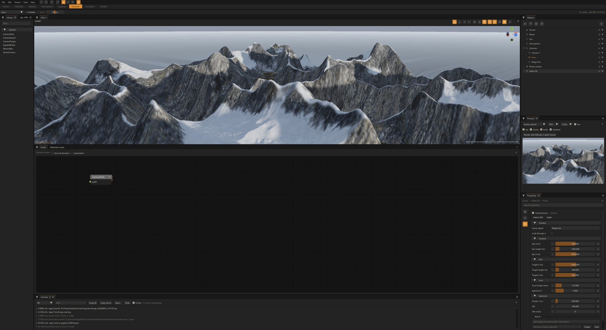
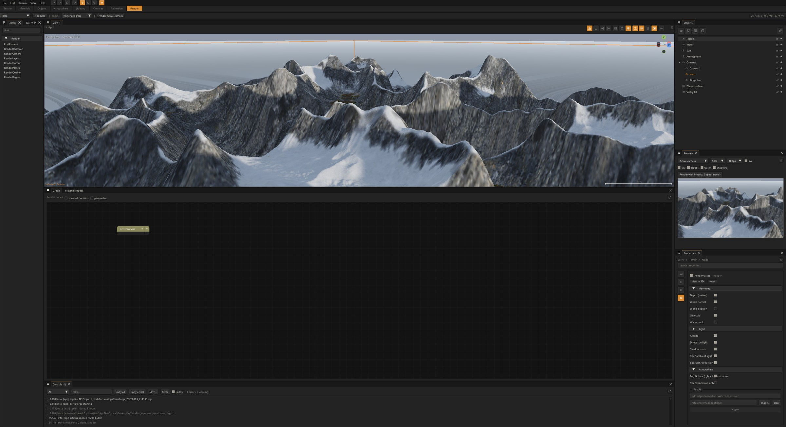
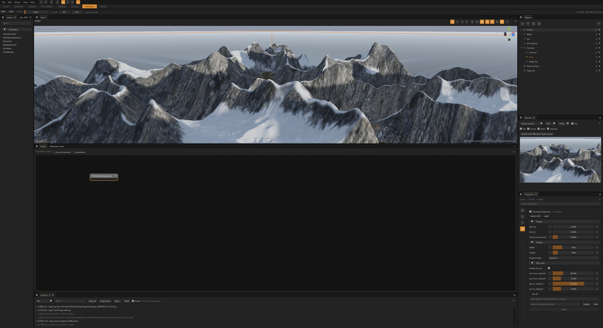
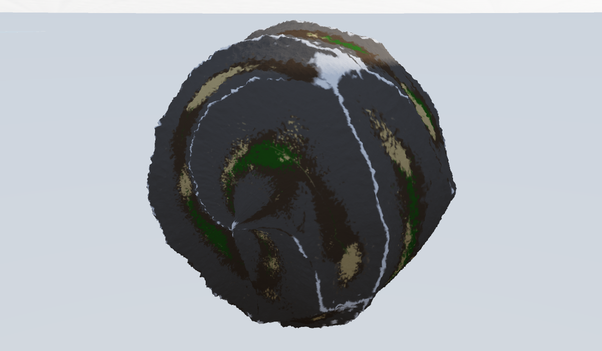
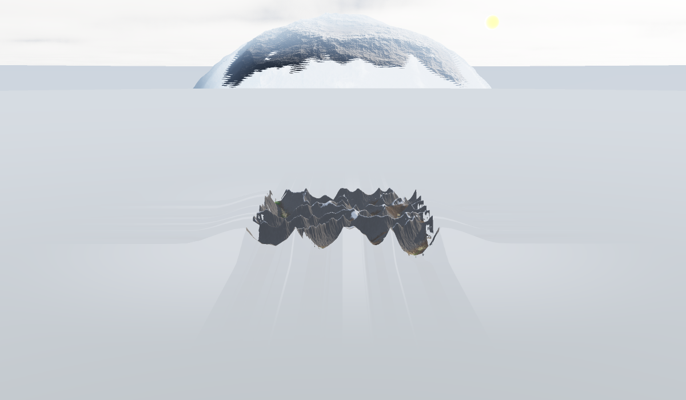
Two evaluation domains in one graph. Buffers where neighbours matter, functions where resolution should not.
A shallow-water pipe model and a stream-power solver, both deterministic to the bit on any thread count. They hand back not just the terrain but the bedrock, scree, soil, grass, sediment, riverbed, snow, wetness and flow that made it.
Those masks drive a stack of photoscanned CC0 surfaces, downloaded and cached on demand. Blending is height-aware: the layer whose texture is highest at a texel wins, so gravel settles into hollows.
Noise, math, colour and displacement nodes evaluate per point in 3D rather than per texel. The graph is transpiled to a shader, and the CPU and GPU results are held to agreement within 4×10-5.
Hardware tessellation with per-patch frustum culling, a float octave count driven by projected pixel size, and fractal relief below the heightmap's own resolution.
Volumetric clouds with multiple-scattering octaves and blue-noise dithering, height fog shared by terrain, water and objects, and an HDR backdrop dome in seven mapping modes.
The assistant, the Python API and the MCP tools all execute the same action path as the interface. Anything you can click, a script can do — including the pictures on this page.
Ready-made installers for Windows and macOS, or one double-click from a clone. Nothing needs administrator rights.
| Windows | Windows 10 (1809) or 11, 64-bit. Run TerraForge-<version>-Setup.exe, or double-click install.bat in a clone. A portable ZIP is published beside the installer. |
| macOS | macOS 11 or newer, Intel or Apple silicon. Open the .dmg and drag to Applications, or double-click install.command in a clone. |
| Linux | Any current distribution: ./scripts/install.sh. |
| Graphics | OpenGL 4.3, or 4.1 on macOS — any GPU since roughly 2012. |
| Optional | Python 3.9+ for the offline path tracers and the local AI assistant. TerraForge renders without either. |
Building from source is three commands:
git clone https://github.com/GeekatplayStudio/TerraForge.art.git cd TerraForge.art ./scripts/get_deps.sh && ./build.sh && ./start.sh # macOS / Linux
powershell -ExecutionPolicy Bypass -File scripts\get_deps.ps1 # Windows .\build.ps1 .\start.ps1